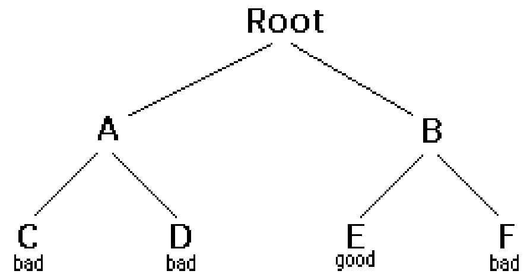

Backtracking is a form of recursion.
The usual scenario is that you are faced with a number of options,and you
must choose one of these.After you make your choice you will get a new set
of options;just what setof options you get depends on what choice you
made.This procedure is repeated over and over until you reach a final
state.If you made a good sequence of choices, your final state is a goal
state ;ifyou didn't,it isn't.
Conceptually,you start at the root of a tree;the tree probably has some
good leaves and some bad leaves,though it may be that the leaves are all
good or all bad.you want to get to be a good leaf.At each node,begining
with the root,you choose one of its children to move to,and you keep this
up until you get to a leaf.
Suppose you get to a bad leaf.You can backtrack to continue the search for
a good leaf by revoking your most recent choice,and trying out next option
in that set of options.If you run out of options,revoke the choice that
got you here,and try another choice at that node.If you end up at the root
with no options left, there are no good leaves to be found.
This need an example.

In this example we drew a picture of a tree.The tree ia an abstract model of the possible sequences f choices we could make.There is also a data structure called a tree,but usually we don't have a data structure to tell us what choices we have.(If we do have an actual tree data structure,backtracking on it is called depth-first tree searching.)
boolean solve(Node n) {
if n is a leaf node {
if the leaf is a goal node,reurn true
else return false
}else{
for each child c of n {
if solve(c) succeeds,return true
}
return false
}
}
Notice that the algorithm is expressed as a function boolean.This is essential to understanding the algorithms. If solve(n) is true,that meansnode n is part of a solution--thst is,node n is one of the nodes on a path from root to some goal nodes.We say that nis solveable.If solve(n) is false,then there is no path that includes n to any goal node.
How does this work ?
Hence do decide whether any non-leaf node n is solveable(part of a path to agoal node),all you have to do is test whether any child of solveable.This ia done by the lines
for each child c of n {
if solve(c) succeeds,return true
}
return false
Eventually the recursion will "bottom" out at a leaf node.If the leaf node is a goal node,it is solveable;if the leaf node is not a goal node,it is not solveable.This is our base case.in the above code,this is done by the lines
if n is aleaf Node{
if the leaf is a goal node,return true
else return false
}
The backtracking algorithm is simple but important.You should understand it thoroughly.Another way of stating it is as follows:
Backtracking is a rather tyoical recursive algorithm can be rewritten as a stack algorithm.In fact,that is how your recursive algorithms are translated into machine or assembly language.
boolean solve(Node n) {
put node n on the stack;
while the stack is not empty{
if the node at the top ofthe stack is a leaf {
if it is a goal node,return true
else pop it off the stack
}
else{
if the node at the top of the stack has untired children
push the next untired child onto the stack
else pop the node off the stack
}
return false
}
starting from the root,the only nodes can be pushed onto the stack are the
children of the node currently on the top of the stack,and these are only
pushed on child at a time;hence,the nodes on the stack at all times
describe a valid path in the tree.Nodes are removed from the stsck only
when it is know that they have no goal nodes among their
decendents.Therefore,if the nodes get removed (making the stack
emoty),there must have been no goalnodesat all,and no solution to the
problem.
When the algorithm terminates successfully,the nodes on the stack form(in
reverse order)a path from the root to a goal node.
similarly,when the recursive algorithm finds a goal node,the path
information is embodied(in reverse order) in the sequence of recursive
calls.Thus as the recursion unwinds,the path can be recovered one node at
a time,by (for instances) printing a node at the current level,or storing
itin an array.
Here is arecursive backtracking algorithm,modified slightly to print(in
reverse order) the nodes along the successfull path:
boolean solve(Node n) {
if n is a leaf node {
if the leaf is agoal node {
print n
return true
}
else return false
} else {
for each child cof n {
if solve(c) succeeds {
print n
return true
}
}
return false}
}
}
All of these version of the backtracking algorithm are pretty simple,but
when applied to a real problem, they can get pretty cluttered up with
details.Even determining whether the node is a leaf can be complex:
for example,if the path represet a series of moves in a class endgame
problem,the leaves are the checkmate and stalemate solutions
To keep the programe clean,therefore,test like this should be buried in
methods.In a chess game,for example,you test whether a node is aleaf by
writing gameOver method(or you could even call
itisLeaf).This method would encapsulate all the ugly details of
figuring out whether any possible moves remains.
Notice that the backtracking algoritms requires us to keep track,for each
node on the current path,which of its children have been tried already(so
we won't have to try them again).In the above code we made this look
simole,by just saying for each child c of n.In reality,it may be
difficult to figure out what the possible children are, and there may be
no obvious way to step through them.In chess,for example,a nodecan
represent one arrangement of pieces of chessboard,and each child of that
node can represent the arrangement after some piece has made a legal
move.How do you find these children,and how do you keep track of which
ones you've already examined?
The most straight forward way to keeptrack of which children of the node
have been tried is as follows:Upon initial entry to the node(that is,when
you first get there from above),make a list of all its children.As you
tryeach child,take it off the list.When the list empty,there are no
remaining untired children,and you can return"failure".This is a simple
approach,but it may require quite a lot of additional work.
There is an easier way to keep track of which children have been tried,if
you can define a ordering,and you know which childyou just tried,you can
determine which child to try next.
For example,you might be able to number the
children 1 through n, and try them in numerical order.Then,if you
have just triedchild k,you know that you have already tried
children 1 throughk-1,and you have not yet tried
childrenk+1throughn.Or,if you are trying to color amap with
just four colors,you can always try choices in the ordr
left,straight,right(orperhaps north,east,south,west).
It isn't always easy to find a simple way to order the children of a node.In the chess game example,you might number your pieces (or perhaps the square of the boards) and try them in numerical order;but in additional each piece may also have several moves,and these must also be ordered.
For starters,let's do the simplest possible example of backtracking,which is searching an actual tree.Wewill also use the simplest kind of tree,a binary tree.
A binary tree is a data structure composed of nodes.one node is designated as the root node.Each node can be reference(point to)zero,one,or two other nodes,which are called its children.The children are reffered to as the left child and/or the right child.All nodes are reachable(by one or more steps) from the root node,and there are no cycles.For our purpose,although this is not part of the defination of a binary tree,we will say that a node might or might not be agoal node,and will contain its name.The first example in this paper(which we repeat here) shows a binary tree.
Here's a defination of binaryTree class:
public class BinaryTree {
BinaryTree leftchild = null;
BinaryTree rightchild = null;
boolean isGoalNode =false;
String name;
BinaryTree(String name,BinaryTree left,BinaryTree right,boolean isGoalNode) {
this.name = name;
leftchild = left;
rightchild = right;
this.isGoalNode = isGoalNode;
}
}
Next we will create a TreeSearch class,and in it we will define a method makeTree() which construct the above binary tree.
static BinaryTree makeTree() {
BinaryTree root,a,b,c,d,e,f;
c = new BinaryTree("C",null,null,false);
d= new BinaryTree("D",null,null,false);
e = new BinaryTree("E",null,null,false);
f = new BinaryTree("F",null,null,false);
a = new BinaryTree("A",c,d,false);
b = new BinaryTree("B",e,f,false);
root = new BinaryTree("Root,a,b,false");
return root;
}
Here's a main programe to create a binary treeand try to solve it:
public static void main(String args[]) {
BinaryTree tree = makeTree();
System.out.println(Solvable(tree));
}
And finally,here's the recursive backtracking routine to"solve" the binary tree by finding a goal node.
static boolean solvable(BinaryTree node) {
/* 1 * / if (node.isGoalNode) return false;
/* 2 * / if (node == null) return true;
/* 3 * / if (solvable(node.leftchild) return true;
/* 4 * / if (solvable(node.rightchild) return true;
/* 5 * / return false;
}
Here's what numbered lines are doing:
This programe runs correctly and produces the unenlightening result true.
Each time we ask for another node,we have to check if it is null.In the above we put that check as the first thing is solvable.an alternative would be to check first whether each child exist,and recur only if they do.here's that alternative version:
ststic boolean solvable(BinaryTree node) {
if (node.isGoalNode) return true;
if (node.leftchild !=null && solvable(node.leftchild)) return true;
if (node.rightchild !=null && solvable(node.rightchild)) return true;
return false;
}
I think version is simpler,but the second version is slightly more efficient.
One of the things that simplifies the above binary tree search is that,at each choice point,you can ignore all the previous choices.Previous choices don't give up any information about what should you do next;as far as you know,both the left and the right child are possible solutions.In many problems,however,you may be able to eliminate children imediately,without recursion.
Consider,for example,the problem of four-cocloring a map.it is atheorm of mathematics that any map on a plane,no matter how convoluted the countries are,can be colored so thst no two countries that share a border are the same color.
To color a map,you choose a color for the first country,then a color for the second country,and so on,until all countries are the same colored.
There are two ways to do this:
Used by method 1 to check (at a leaf node) whether the entire map is colored correctly.
Used by method 2 to check, at every node,whether there is an adjacent node already colored with the color.
Used by both methods to find the next "country" (actually, the row and column of the next square on the checkboard).
boolean explore1(int row,int column,int color) {
if (row >= Num_ROWS)return maplsOK();
map[row][column] =color;
for (int nextcolor = RED;nextcolor <= BLUE;nextcolor++) {
int[] next = nextRowAndColumn(row,column);
if (explore1(next[0],next[1],nextcolor)) return true;
}
reurn false;
}
And here's code for method 2
boolean explore2(int row,int color,int column) {
if(row >=Num_ROWS)return true;
if(okToColor(row,column,color)) {
map[row][column] =color;
for (int nextcolor =RED;nextcolor<=BLUE;nextcolor++) {
int[] next = nextRowAndColumn(row,column);
if (explore2(next[0],nextColor)) return true;
}
}
return false;
}
Those appear pretty similar,and you might think they are equally good.However, the timing information suggest otherwise:
| 2 by 3 map | 3 by 3 map | 3 by 4 map | |
| Method 1: | 60 ms | 940 ms | 60530 ms(1 minute) |
| Method 2: | 0 ms | 0 ms | 0 ms |
The zeros in the above table indicate times too short to measure (less than 1 millisecond). Why this huge difference? Either of these methods could have exponential growth. Eliminating a node automatically eliminates all of its descendents, and this will often prevent exponential growth. Conversely, by waiting to check until a leaf node is reached, exponential growth is practically guaranteed. If there is any way to eliminate children (reduce the set of choices), do so!
Often our first try at a program doesn't work, and we need to debug it. Debuggers are helpful, but sometimes we need to fall back on inserting print statements. There are some simple tricks to making effective use of print statements. These tricks can be applied to any program, but are especially useful when you are trying to debug recursive routines.
Often, the best debugging technique is to print every method call and return (or at least the most important ones). You probably want to print, for each method, what parameters it came in with, and what value it leaves with. However, if you just print a long list of these, it's hard to match up method exits with their corresponding entries. Indenting to show the level of nesting can help.
Don't clutter up your actual code more than you must. Also, remember that code inserted for debugging purposes can itself contain bugs, or (in the worst case) can affect the results, so be very careful with it.
Here's our debugging code. For this trivial program, there's almost more debugging code than actual code, but in larger programs
the proportions will be better.
static String indent = "";
static String name (BinaryTree node) {
}
if (node == null) return null;
else return node.name;
}
static void enter (BinaryTree node) {
System.out.println(indent + "Entering solvable(" + name(node) + ")");
indent indent + "|";
}
static boolean yes (BinaryTree node) {
indent
indent.substring(3);
System.out.println(indent + "solvable(" + name (node) + ") returns true");
return true;
}
static boolean no(BinaryTreenode){
indent = indent.substring(3);
System.out.println(indent + name(node) + " ) return false");
retuen false;
}TO use this code, we modify solveable as follows:
static boolean solvable (BinaryTree node) {
enter(node);
if (node == null) return no(node);
if (node.isGoalNode) return yes(node);
if (solvable (node.leftChild)) return yes(node);
if (solvable (node.rightChild)) return yes(node);
return no(node);
}And we get these results:
| Entering solvable (A)
|| Entering solvable(C)
||| Entering solvable(null)
||| solvable(null) returns false
||| Entering solvable(null)
||| solvable(null) returns false
|| solvable(C) returns false
||Entering solvable(D)
||| Entering solvable(null)
||| solvable(null) returns false
||| Entering solvable(null)
||| solvable(null) returns false
|| solvable (D) returns false
|solvable (A) returns false
| Entering solvable (B)
|| Entering solvable(E)
||solvable (E) returns true
|solvable(B) returns true
solvable (Root) returns true
true
Writing debugging statements is programming, too. Often it's as much work to debug the debugging statements as it is to debug the actual program. Once your program is working, why throw this code away?
Obviously, you don't want to print out all this debugging information from a program you are ready to submit (or to turn over to your manager). You could comment out your debugging calls, but that can be a lot of work. What's more, in the above example, you would have to replace every return(yes (node)) with return(true), and every return (no (node)) with return false. With all these changes, you might introduce new bugs into your program.
The simple solution is to make your debugging statements conditional. For example,
static final boolean debugging = false;
static void enter (BinaryTree node) { if (debugging) { System.out.println(indent + "Entering solvable(" + name(node) + ")"); indent = indent +"| "; } } static boolean yes(BinaryTree node) { if (debugging) { } indent indent.substring(3); System.out.println(indent + "solvable(" + name (node) + ") returns true"); return true; static boolean no (BinaryTree node) { if (debugging) { indent indent.substring(3); System.out.println(indent + "solvable(" + name (node) + ") returns false"); } return false;
In industry, actual programs often have multiple flags to control different aspects of debugging. Don't worry too much about making your code larger; modern compilers will notice that since the variable debugging is final, it can never be true, and the controlled code will be discarded.
If an Exception is thrown, you can get information about just where it happened by sending it the message printStackTrace(PrintStream). Since an Exception is an object like any other, you can create and throw your own Exceptions. However, Java programmers don't always realize that you can create an Exception without throwing it. For example, the following code
new Exception("Checkpoint Charlie").printstack(System.out);will print out a message something like this, and the program will then continue normally. That is, the above code just acts like a print statement.
I call the following puzzle "Cindy's puzzle" for historical reasons. You have some number n of black marbles and the same number of white marbles, and you have a playing board which consists simply of a line of 2n+1 spaces to put the marbles in. Start with the black marbles all at one end (say, the left), the white marbles all at the other end, and a free space in between.
The goal is to reverse the position of the marbles:
The black marbles can only moves to the right, and the white marbles can only move to the left(no backing up).At each move,a marble can either:
For example,you could make the following sequence of move:
| Starting position: |
|
|---|
| Black moves ahead: |
|
||||||||||||||||||||||||||
|---|---|---|---|---|---|---|---|---|---|---|---|---|---|---|---|---|---|---|---|---|---|---|---|---|---|---|---|
| White jump: |
|
|---|
| Black moves ahead: |
|
|---|
| Black jump: |
|
|---|
| White move ahead: |
|
|---|
Stuck!
The backtracking method is named solvable and returns a boolean. In solvable we shall need to check whether we are at a leaf, which in this case means a position from which no further moves are possible. This isn't so easy.
Now to the program. The main program will initialize the board, and call a recursive backtracking routine to attempt to solve the puzzle. The backtracking routine will either succeed and print out a winning path, or it will fail, and the main program will have to print out the bad news.
The backtracking method is named solvable and returns a boolean. In solvable we shall need to check whether we are at a leaf, which in this case means a position from which no further moves are possible. This isn't so easy.
Each possible move will result in a new board position, and these new board positions are the children of the current board position. Hence to find the children of a node (that is, of a board position), we need only find the possible moves from that node. Remember that it is also highly desirable to find an ordering on these possible moves.
Here it is time to stop and take thought. To make progress, we must analyze the game to some extent. Probably a number of approaches would work, and what follows is based on the way I worked it out. If you were to program this puzzle, you might find a different but equally valid approach.
First, notice that if a marble has a move, that move is unique: if it can move ahead one square, then it cannot jump. If it can jump, it cannot move ahead one square. This suggests that, to find the possible moves, we might assign numbers to the marbles, and check each marble in turn. When we have looked at all the marbles, we have looked at all the possible moves. This would require having a table to keep track of where each marble is, or else somehow "marking" each marble with its number and searching the board each time to find the marble we want. Neither alternative is very attractive.
Next, notice that for a given board position, each marble occupies a unique space. Hence, instead of talking about moving a particular marble, we can talk about moving the marble in a particular space. If a move is possible from a given space, then that must be the only move possible from that space, because if the marble in that space has a move, it is unique. There is a slight complication because not every space contains a marble, but at least the spaces (unlike the marbles) stay in one place.
Now we have a simpler ordering of moves to use in our program. Just check, in order, the 2n+1 spaces of the board. For each space, either zero or one moves is possible. With this understanding, we can write a boolean method canMove(int[] board, int position) which determines whether a move is possible from the given position:
boolean solvable(int[] board) {
if (puzzleSolved(board)) {
return true;
}
for (int position = 0; position < BOARD_SIZE; position++) {
if (canMove(board, position)) {
int[] newBoard = makeMove(board, position);
if (solvable(newBoard)) {
printBoard(newBoard);
return true;
}
}
}
return false;
}
Along with canMove and makeMove, we are using methods puzzleSolved and printBoard with meanings that should be obvious.
Here is some output from the program:
- WHITE WHITE WHITE_____ BLACK BLACK
- WHITE WHITE WHITE BLACK_____ BLACK
- WHITE WHITE_____ BLACK WHITE BLACK
- WHITE_____ WHITE WHITE BLACK BLACK
- WHITE WHITE WHITE BLACK_____ BLACK
- WHITE_____ WHITE WHITE BLACK BLACK
- WHITE WHITE WHITE BLACK_____ BLACK
- WHITE WHITE_____ WHITE BLACK BLACK
- WHITE WHITE WHITE_____ BLACK BLACK
- WHITE_____ WHITE WHITE BLACK BLACK
- WHITE WHITE WHITE BLACK_____ BLACK
- WHITE WHITE_____ WHITE BLACK BLACK
- WHITE WHITE WHITE BLACK BLACK_____
- WHITE WHITE_____ WHITE BLACK BLACK
- WHITE WHITE WHITE_____ BLACK BLACK
- WHITE_____ WHITE WHITE BLACK BLACK
Notice that the solution is given in reverse order: BLACK starts out on the left and WHITE on the right, as in the last line. I've added line numbers to the actual output in order to emphasize this point. Backtracking always produces its results (sequence of choices) in reverse order; it is up to you, the programmer, to reverse the results again to get them in the correct order